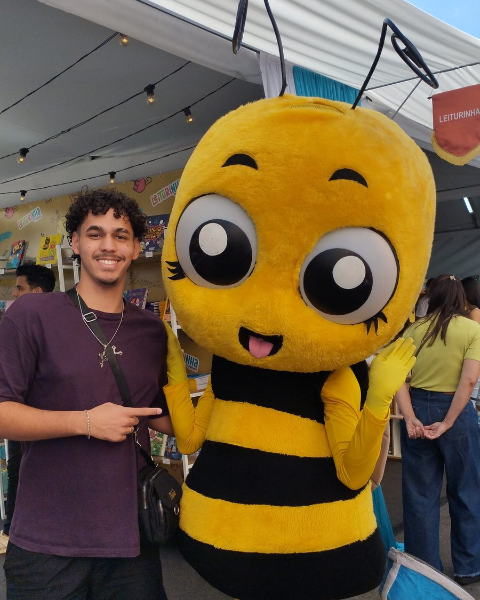

AEDs 1 — Prática
Sistema de controle e estatísticas de uma base de dados em C++, com inserção, remoção, busca e manipulação de arquivos.
Ver detalhesOlá, pode me chamar de Gabriel
Eu construo sistemas eficientes
Estudante de Ciência da Computação na UNIFAL-MG. Gosto de entender como as coisas funcionam por dentro — do baixo nível à web — e de transformar esse entendimento em software bem feito, performático e com propósito.
Sou Gabriel Henrique Silva Pereira, desenvolvedor em formação pela UNIFAL-MG. O que me move é resolver problemas de verdade com soluções eficientes — e fazer isso direito, do design à última otimização.
Minha jornada começou pela curiosidade de entender o sistema operacional por dentro: comecei mexendo nos mecanismos de registro (.reg) e aplicando otimizações. Essa mesma vontade de abrir a caixa e ver os fios me levou da programação de baixo nível à web e à infraestrutura self-hosted.
Hoje transito entre mundos diferentes: baixo nível em C/C++, orientação a objetos em Java com testes e padrões de projeto, web full-stack e a administração do meu próprio homelab em Linux. Tenho um jeito cético de trabalhar — prefiro decisão baseada em evidência a hype, e gosto de entender o porquê das coisas antes de aceitá-las.

Tecnologias com as quais já trabalhei em disciplinas, projetos pessoais e infraestrutura própria.
Universidade Federal de Alfenas — UNIFAL-MG
Base sólida em Programação Orientada a Objetos, Estruturas de Dados, Programação Lógica e Matemática Discreta — sempre levando a teoria para a prática em projetos reais. Toda a grade está organizada por período no repositório faculdade-bcc ↗.
Estudo autodidata
Coloco em prática o que aprendo além da sala de aula: um sistema acadêmico em Java com testes automatizados e CI/CD, aplicações web full-stack e um homelab self-hosted em Linux rodando os meus próprios serviços. É onde experimento boas práticas de verdade.
Clique em um card para ver os detalhes.
Sistema de controle e estatísticas de uma base de dados em C++, com inserção, remoção, busca e manipulação de arquivos.
Ver detalhesGestão acadêmica em Java com RBAC, persistência plugável (TXT/XML/JSON), CLI + GUI JavaFX, testes automatizados e CI/CD completo.
Ver detalhesServidor pessoal em Linux com serviços em Docker — senhas, fotos, mídia e Git próprio — acessível com segurança via Tailscale, sem qualquer exposição pública.
Ver detalhesPredicados de ordenação de listas em Prolog usando recursão e a estratégia decorate–sort–undecorate, com atenção à estabilidade da ordenação.
Ver detalhesPWA full-stack para acompanhamento de treino e progressão, com backend em Supabase e deploy em Netlify.
Ver detalhesEstou aberto a oportunidades, projetos e trocas de ideia. Se algo aqui te interessou, é só mandar uma mensagem — respondo sempre que possível.
gabrielhspereira36@gmail.comAplicação desenvolvida para a disciplina de Algoritmos e Estruturas de Dados 1. O projeto é um sistema de gerenciamento de uma base de dados, com operações de inserção, remoção, busca e geração de estatísticas sobre os dados armazenados.
O foco foi praticar estruturas de dados dinâmicas e manipulação de arquivos em C++, com atenção à organização e eficiência do código.
Sistema de gestão acadêmica em Java que administra turmas e avaliações, com acesso controlado por dois papéis (Administrador e Professor). Roda em linha de comando e em interface gráfica JavaFX, reutilizando exatamente a mesma lógica de negócio. O escopo funcional é enxuto de propósito: o foco está na qualidade de engenharia em volta.
Camadas com responsabilidades bem separadas — a interface nunca fala direto com o domínio,
passa pelo controller, que autoriza e delega:
View → Controller → Service → Repository → Model, com Segurança e Validação transversais.
A GUI inteira foi adicionada sem alterar uma linha de regra de negócio.
RBAC com matriz de permissões como fonte única de verdade — o menu esconde, a
autorização bloqueia — e trilha de auditoria dedicada.
Repository + Strategy para persistência intercambiável em TXT/XML/JSON sem o
domínio conhecer o formato (OCP), além de Singleton, hierarquia polimórfica de avaliações e
Bean Validation.
13 classes de teste em JUnit 5 + Mockito (testes de interação com verify())
e cobertura via JaCoCo.
4 workflows de CI/CD (build/testes, validação de PR, imagem Docker no GHCR e
release por tag), com Docker multi-stage e branch protection.
Servidor pessoal montado em Linux (Debian) para hospedar os próprios serviços em vez de depender de nuvens de terceiros: gerenciador de senhas, backup de fotos, sincronização de arquivos, streaming de mídia, Git próprio e monitoramento.
Serviços isolados em contêineres Docker e gerenciados por painel via navegador. O acesso é feito por uma rede privada com Tailscale — o que contorna o CGNAT do provedor sem abrir nenhuma porta nem expor nada à internet pública. Um exercício prático e real de Linux, redes e administração de sistemas.
Aplicativo web progressivo (PWA) para registro e acompanhamento de treinos, com sistema de progressão por fases. Funciona como um app instalável, com interface pensada para uso real no dia a dia.
O backend usa Supabase (banco e autenticação) e o deploy é feito na Netlify — uma stack moderna e enxuta para tirar a ideia do papel rapidamente.
Atividade da disciplina de Programação Lógica: dois predicados que ordenam listas de listas — um pelo comprimento das sublistas e outro pela frequência desses comprimentos.
Implementação recursiva com a estratégia decorate–sort–undecorate, com cuidado especial
para manter a estabilidade da ordenação (a sutileza entre =< e
< que preserva a ordem entre elementos iguais). Testado e verificado no SWI-Prolog
contra os resultados esperados — um exercício de pensar de forma declarativa, bem diferente do
imperativo.